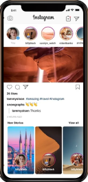
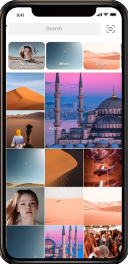
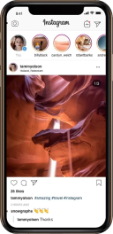

<section class="social-media"> <div class="social-media__header"> <h2 class="social-media__title">Социальные сети</h2><p class="social-media__header-text--large">Будь в курсе всего!</p><p class="social-media__header-text--small">Новости Unite Gaming в социальных сетях</p></div><ul class="social-media__list"> <li class="social-media__item instagram"><h3>Наш Instagram</h3><div class="instagram__bg"> </div><a href="#">Перейти</a></li><li class="social-media__item icq"><h3>Наш ICQ канал</h3><a href="#">Перейти</a><div class="icq__bg"></div></li></ul></section>